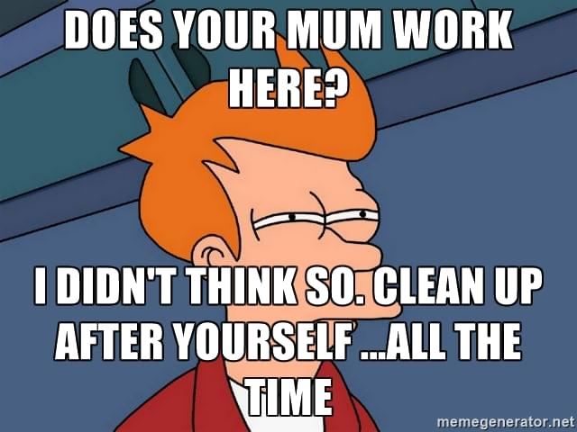

Cà phê cùng Tony - ly cà phê đậm đà hương vị cuộc sống
thực tình mà nói mình không mấy khi đọc sách của các tác giả việt Nam không phải vì sính ngoại gì đâu nhưng thực sự mấy quển mình đọc qua đèu không đủ kiên nhẫn đọc hết 10 trang đầu cả 😦, nhưng dạo này thấy quển sách mới của dượng Tony hot quá nên tò mò đọc thử. với hiểu biết sâu rộng, nhẫn quan tinh tế và giọng văn cuốn hút cuốn sách đã hút hồn mình ngày từ những trang đầu tiên.
Cà phê cùng Tony là sự tập hợp các bài viết trên trạng mạng xã hội của tác giả Tony Buổi Sáng (TnBS) về những bài học, câu chuyện anh đã trải nghiệm trong cuộc sống. Đó có thể là cách anh chia sẻ với các bạn trẻ về những chuyện to tát như khởi nghiệp,đạo đức kinh doanh, học tập đến những việc nhỏ nhặt như ăn mặc, giao tiếp, vệ sinh cơ thể… sao cho văn minh, lịch sự. Hay chỉ đơn giản thuật lại những trải nghiệm thực tế của anh trong quá trình sống, kinh doanh ở trong và ngoài nước.
Nếu bạn nào không có điều kiện mua sách có thể đọc bản mềm tại đây hoặc nghe bản audio tại đây nhưng tuyệt vời nhất vẫn là đọc bản in vừa hay vừa để ủng hộ tác giả Tony buổi sáng.
Sau khi đọc xong cuốn sách này lần đầu cảm giác đầu tiền đến với mình là có phần tiếc nuối vì mình đã đọc quá nhanh mà không hiểu hết đưọc thông các điêp mà tác giả muốn truyền tải, cũng phải thôi ai bảo viết hay quá làm chi chỉ muốn đọc ngấu ngiến cho bằng hết thì thôi không còn thời gian đâu mà suy ngẫm thông điệp của tác giả 😄, Thôi thì đọc lại lần nữa cho củ chắc. sau khi đọc những mẩu chuyện trong này mỗi người sẽ thấy một phần bản thân trong đó, và sẽ rút ra được những bài học cho riêng mình. Riêng bản thân mình thấy rất ấn tượng với một số toppic.
Đầu tiên là chuyện giáo dục tuy không có câu chuyện nào đơn thuần nói về chuyện giáo dục nhưng hình như mẩu chuyện nào cũng có liên quan đến toppic này, tác giả chỉ ra sự khác biệt giữa hai nền giáo dục phương Đông và phương Tây không chỉ là việc học ở trường mà ngay cả quan niệm nuôi dạy con cái. đây như là căn nguyên của rất nhiều thứ, từ việc kỹ năng sống, tính sáng tạo đến nhũng việc nhỏ nhặt như tranh luận, vệ sinh cá nhân Tây đều ăn dứt Ta.

Rồi Chuyện vệ sinh tưởng nhỏ mà không hề nhỏ, nào là móc 💩 mũi, chuyện giày tất 🤢, tắm gội dưới giọng văn dí dỏm dọc xong cười rồi giật mình thon thót chửi tác gỉa, ông này theo dõi mình hay sao ý nhỉ sao mấy chuyện này mà ổng cũng biết là sao 😄. à tiện topic này nhắc luôn chuyện “clean up after yourself” nhiều khi mình cũng không để ý cứ làm xong rồi bỏ đấy không sắp xếp mọi thứ như ban đầu, lớn rồi không có ai đi dọn cho nữa đâu.
nói đến topic này thì thực sự là mình cức kỳ tồi đó là chuyện giao tiếp gao tiếp làm sao để đối phương không bị quê, thao luận nhóm như thế nào, tranh luận ra làm sao với mình thực sự là khó khăn :sad: :’(.
cái topic cuối cùng mà mình muốn đề cập ở đây chính là chuyện sức khỏe thanh niên như chúng ta thường vì mải học, mải làm, mải chơi mà quên mất tầm quan trọng của sức khỏe, thói quên sinh hoạt không hợp lý, ăn uống qua loa, không rèn luyện thể dục thể thao. để rồi khi nhận ra sức khỏe xuống dóc thì đã quá muộn. sau hôm nay mình nhất định sẽ quan tâm gĩư gìn sức khỏe hơn.
chúc các bạn cà phê cùng Tony vui vẻ nhé.
good bye.